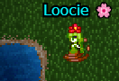

Overview
One of the four main resource gathering skills, Fishing is a somewhat passive earner.
Whilst you're not running a dungeon, you could be fishing.
The primary resource is Crappie, but other materials such as
Lustrious Dust can also be gathered.
These materials can be used to craft items such as Elixir of Spirited Grace and more.

Fishing in action
How do I start to fish?
To start fishing, you need a suitable rod such as a Beginner Rod,
which can be found in Beginner Skill Kits.
You no longer need Worms, which are obtained by gathering flowers.
Once equipped, find a patch of water (shorelines work best), stand next to it,
and use your default attack button to begin fishing.
Catchable
Fishing does not always guarantee a catch. The success rate appears to be around
1/4 to 1/5, though this is not confirmed.
You may experience streaks of success or failure depending on RNG.
| Item Name |
Location |
| Crappie |
Most waters |
| Lustrious Dust |
Most waters |
| Clownfish |
Syndicate waters |
| Cragspine fish |
Crag's waters / Lost City |
Tips
As soon as possible, aim to craft Angler's Reels and Crappie-Matic rods.
They have the highest durability and "catch rates" at base before your level buffs,
making fishing more efficient.
Fishing in Syndicate waters is highly beneficial:
- Collect Clownfish for dungeon keys
- Appears to grant faster EXP (Double usual XP) on successful catches
Note: Clownfish/Cragspine fish cannot be turned into Fish Oil.
Summary:
Crappie → Items / Gold
Clownfish → Dungeon Keys / EXP
Cragspine → Useless at present